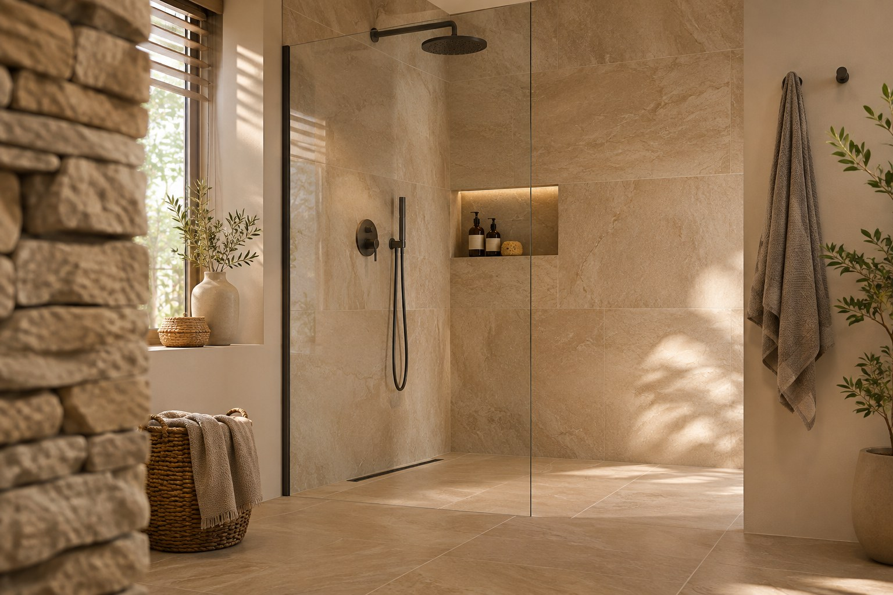

Morgens ins Bad.
Erst mal Ruhe.
Großformatiges Feinsteinzeug gibt Ihrem neuen Bad weite, ruhige Flächen. Für die Sanierung planen wir jede Fuge, vom Türanschluss bis zum Ablauf der bodengleichen Dusche.

Großformatiges Feinsteinzeug gibt Ihrem neuen Bad weite, ruhige Flächen. Für die Sanierung planen wir jede Fuge, vom Türanschluss bis zum Ablauf der bodengleichen Dusche.
